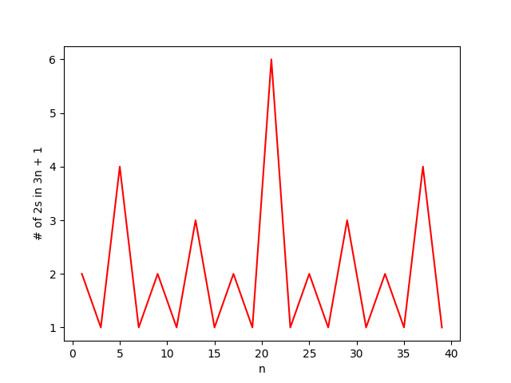
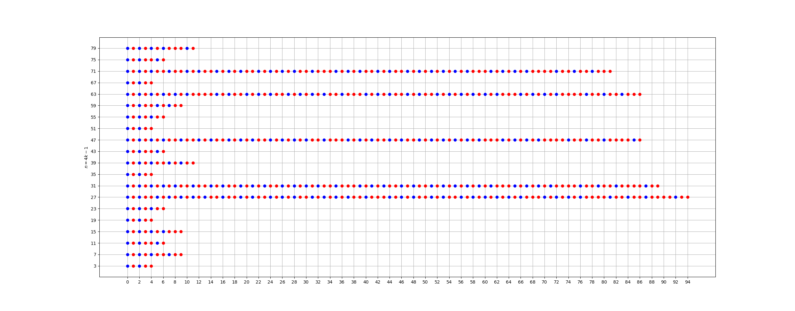
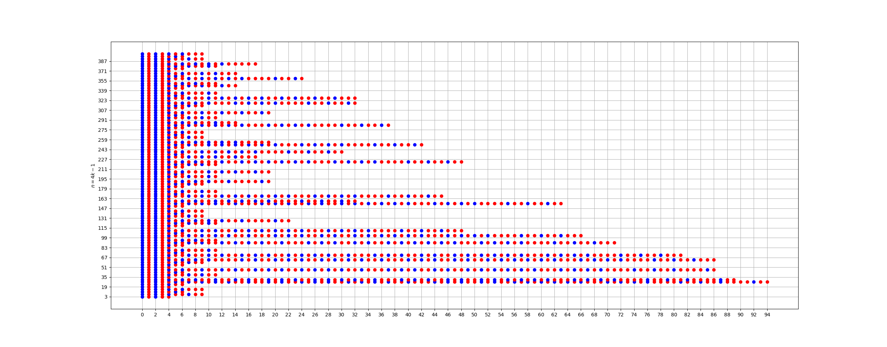

Η εικασία Collatz (7)#
Ο πίνακας Δανάη του Henri Fantin-Latour.#
Την προηγούμενη εβδομάδα είδαμε διάφορα ωραία και ενδιαφέροντα σε σχέση με την εικασία Collatz και το πώς αυτή σχετίζεται με άλλα δύσκολα προβλήματα που αφορούν τους αριθμούς και την ανάλυσή τους σε γινόμενο πρώτων παραγόντων. Για την ακρίβεια είδαμε ότι η εικασία που έχουμε αγαπήσει να μισούμε λύνεται πολύ εύκολα αν μπορούμε να προσδιορίσουμε το ανάπτυγμα σε γινόμενο πρώτων ενός θετικού ακεραίου αριθμού από τον προηγούμενο ή τον επόμενό του. Ωστόσο, αυτό από μόνο του είναι ιδιαίτερα δύσκολο - και ακόμα αναπάντητο.
Αν θέλετε να θυμηθείτε περισσότερα από όσα έχουμε πει δείτε εδώ και εδώ.
Επί τρία, διά δύο…#
Πιάνοντας το νήμα ακριβώς από εκεί που το αφήσαμε, είχαμε ξεκινήσει να έχουμε μία εναλλακτική προσέγγιση στην εικασία του Collatz. Για την ακρίβεια, είχαμε πει πως αντί να ψάχνουμε πότε ένας αριθμός οδηγεί σε ακολουθία που τερματίζει, μπορούμε για αρχή να ψάχνουμε πότε ένας αριθμός οδηγεί σε ακολουθία που κάποια στιγμή «πέφτει» κάτω από τον αρχικό της όρο. Έτσι, αν για παράδειγμα έχουμε έναν αριθμό \(n\) και δείξουμε ότι η ακολουθία Collatz που ξεκινάει με αυτόν σε κάποια φάση καταλήγει σε έναν αριθμό \(m<n\) και, επιπλέον, έχουμε αποδείξει ότι όλοι οι αριθμοί που είναι μικρότεροι του \(n\) οδηγούν σε ακολουθίες Collatz που τερματίζουν, τότε έχουμε τελειώσει.
Επομένως, αντί να κοιτάμε ολόκληρες ακολουθίες Collatz, ασχολούμαστε απλά και μόνο με το αν κάποτε οδηγούν σε κάποιον μικρότερο όρο - με την ελπίδα ότι αυτή η απλοποίηση που κάναμε θα μας οδηγήσει πιο εύκολα σε αποτελέσματα. Έτσι, αμέσως-αμέσως παρατηρούμε ότι δεν χρειάζεται προς το παρόν να ασχοληθούμε με κανέναν άρτιο αριθμό, καθώς αυτοί στο πρώτο βήμα οδηγούν σε υποδιπλασιασμό - δεν ισχυριζόμαστε ότι όλοι οι άρτιοι δίνουν ακολουθίες Collatz που τερματίζουν στο 1, αλλά απλά ότι δε θα μας απασχολήσουν προς στιγμή.
Έπειτα, σχεδιάσαμε το ακόλουθο script σε python το οποίο σχεδιάζει το πόσους υποδιπλασιασμούς μπορούμε να κάνουμε ξεκινώντας από έναν δεδομένο περιττό αριθμό αφού πρώτα τον τριπλασιάσουμε και προσθέσουμε μία μονάδα:
import json
from matplotlib import pyplot as plt
def count_powers_of_2(n):
powers = []
for i in range(1, 2 * n + 1, 2):
j = 3 * i + 1
counter = 0
while j % 2 == 0:
j /= 2
counter += 1
powers.append(counter)
return powers
def plot_frequencies(powers):
x = [2 * i + 1 for i in range(len(powers))]
plt.plot(x, powers, 'r-')
plt.xlabel('nʹ)
plt.ylabel('# of 2s in 3n + 1ʹ)
plt.savefig('powers_ʹ + str(len(powers)) + '.pngʹ)
if __name__ == '__main__ʹ:
n = 20
powers = count_powers_of_2(n)
with open('powers_ʹ + str(n) + '.txtʹ, 'wʹ) as file:
json.dump(powers, file)
plot_frequencies(powers)
Ένα σχήμα που είχαμε πάρει την προηγούμενη εβδομάδα είναι το ακόλουθο:

Πόσες δυνάμεις του 2 χωράνε;#
Με αφορμή το παραπάνω σχήμα αποδείξαμε ότι υπάρχει ένα σύνολο αριθμών, αυτοί της μορφής \(4k-1\) για \(k=1,2,\ldots\) οι οποίοι, αφού «τριπλασιαστούν» μετά μπορούν να διπλασιαστούν μόνο μία φορά και, ως εκ τούτου, οδηγούν σε έναν όρο μεγαλύτερο από τον αρχικό - δηλαδή, τον \(4k-1.\) Συνεπώς, αυτοί οι αριθμοί είναι κάπως «προβληματικοί», καθώς δε μας βοηθούν να «μικρύνουμε» τους όρους της ακολουθίας μας, τελικά, οπότε και θα θέλαμε να ξέρουμε περισσότερα πράγματα γιʹ αυτούς. Διότι, εντάξει, είναι κακοί, αλλά ίσως και να μην πειράζει, καθώς αν δεν συναντάμε συχνά τέτοιους αριθμούς μέσα σε μία ακολουθία Collatz τότε ούτε γάτα ούτε ζημιά, που λέμε.
Συνεπώς, έχοντας περιοριστεί στους αριθμούς \(4k-1,\) θέτουμε το εξής ερώτημα:
Πόσα βήματα χρειάζεται να κάνουμε ξεκινώντας από έναν τέτοιον αριθμό μέχρι να φτάσουμε σε έναν μικρότερο όρο της ακολουθίας Collatz;
Όπως φαντάζεστε, πριν προσπαθήσουμε να αποδείξουμε το ο,τιδήποτε, θα προσπαθήσουμε να αποκτήσουμε λίγη διαίσθηση κάνοντας κάποιες δοκιμές. Σε αυτές τις δοκιμές θα μας βοηθήσει το ακόλουθο script:
from matplotlib import pyplot as plt
def next_collatz(n):
if n % 2 == 0:
return (n / 2, 0)
return (3 * n + 1, 1)
def count_steps_to_end(n):
steps = []
for i in range(n):
sequence = []
k = 4 * i + 3
(next, op) = next_collatz(k)
while next >= k:
sequence.append(op)
(next, op) = next_collatz(next)
steps.append(sequence)
return steps
def plot_steps(n):
steps = count_steps_to_end(n)
y = [4 * i + 3 for i in range(n)]
m = 0
for i in range(n):
for j in range(len(steps[i])):
if len(steps[i]) > m:
m = len(steps[i])
if steps[i][j] == 0:
plt.plot(j, y[i], 'roʹ)
else:
plt.plot(j, y[i], 'boʹ)
plt.ylabel('$n=4k-1$')
plt.yticks(y)
plt.xticks([i for i in range(0, m, 2)])
plt.grid()
plt.show()
if __name__ == '__main__ʹ:
n = 20
plot_steps(n)
Το παραπάνω script μας βοηθάει να σχεδιάσουμε ένα σχήμα σαν το παρακάτω:

Κυκλάκια, πολλά κυκλάκια…#
Αυτό που βλέπουμε παραπάνω είναι τα βήματα που χρειάζονται, ξεκινώντας από έναν αριθμό της μορφής \(4k-1\) - κάθετος άξονας - έτσι ώστε να φτάσουμε σε έναν όρο μικρότερο από τον αρχικό. Επιπρόσθετα, κάθε βήμα (κυκλάκι) είναι χρωματισμένο είτε κόκκινο είτε μπλε, με το κόκκινο να σημαίνει ότι σε εκείνο το βήμα έγινε υποδιπλασιασμός ενώ το μπλε σημαίνει ότι έγινε «τριπλασιασμός».
Παρατηρώντας το παραπάνω σχήμα βλέπουμε, αρχικά, ότι για κάθε αριθμό έχουμε ένα αρχικό μοτίβο που το περιμέναμε: «τριπλασιασμός» - υποδιπλασιασμός - «τριπλασιασμός» - υποδιπλασιασμός. Έπειτα από αυτά τα τέσσερα πρώτα βήματα, που είναι υποχρεωτικά τα ίδια για κάθε αριθμό της μορφής \(n=4k-1\) δε φαίνεται να έχουμε κάτι σαφέστερο - τουλάχιστον όχι με μία πρώτη ματιά. Ας δούμε, όμως, τι είδους αριθμός είναι ένας αριθμός που προκύπτει από τον \(n=4k-1\) εφαρμόζοντας τα παραπάνω 4 βήματα:
Αρχικά, «τριπλασιάζουμε» παίρνοντας τον \(3n+1=12k-2.\)
Έπειτα, υποδιπλασιάζουμε παίρνοντας τον \(6k-1.\)
Έπειτα, «τριπλασιάζουμε» παίρνοντας τον \(18k-2.\)
Έπειτα, υποδιπλασιάζουμε παίρνοντας τον \(9k-1.\)
Τώρα, οι αριθμοί της μορφής \(9k-1\) είναι σαφώς μεγαλύτεροι από τους \(4k-1\) για ίδιες τιμές του \(k=1,2,\ldots\) οπότε και έχουμε δουλειά μπροστά μας να κάνουμε.
Πώς όμως μπορούμε να δούμε αν από έναν αριθμό της μορφής \(9k-1\) μπορούμε με πεπερασμένο πλήθος εφαρμογών των βασικών πράξεων που μας έχει καθορίσει ο κύριος Collatz να καταλήξουμε σε έναν αριθμό μικρότερο από τον \(4k-1.\) Από το παραπάνω σχήμα δε φαίνεται, μετά τα 4 πρώτα βήματα, να υπάρχει κάποιο μοτίβο. Ίσως ένα μεγαλύτερο σχήμα να μας βοηθήσει:

Χμμμ, κάτι αρχίζει να αχνοφαίνεται…#
Εδώ, αν παρατηρήσετε, πέρα από τα τέσσερα πρώτα βήματα που είναι ίδια - μπλε, κόκκινο, μπλε, κόκκινο - έχουμε και μετά ένα ωραίο μοτίβο. Φαίνεται το πέμπτο βήμα να είναι εναλλάξ είτε μπλε είτε κόκκινο. Δηλαδή, ξεκινώντας από έναν αριθμό της μορφής \(9k-1\) φαίνεται μετά να έχουμε δύο επιλογές:
για περιττές τιμές του \(k\) φαίνεται να μπορούμε να υποδιπλασιάσουμε (τουλάχιστον μία φορά) ενώ,
για περιττές τιμές του \(k\) φαίνεται να μην μπορούμε να υποδιπλασιάσουμε.
Αλγεβρικά, αυτό επιβεβαιώνεται εύκολα, αφού αν \(k=1,3,5,\ldots\) τότε ο \(9k-1\) είναι άρτιος - ως διαφορά περιττών - και άρα μπορούμε να τον υποδιπλασιάσουμε. Γράφοντας \(k=2l-1\) για :math:`l=1,2,ldots ` έχουμε:
Στην περίπτωση που \(k=2l\) δεν μπορούμε να υποδιπλασιάσουμε, άρα από τον \(9k-1\) περνάμε στον \(27k-2\) - που είναι ακόμα μεγαλύτερος. Τώρα, για τον \(9l-5\) μπορούμε να παρατηρήσουμε πως στην (υπο-υπο-)περίπτωση που ο \(l\) είναι περιττός, είναι άρτιος - και πάλι ως διαφορά περιττών. Επομένως, μπορούμε να ξανα-υποδιπλασιάσουμε και να βρούμε τον ακόλουθο αριθμό - υποθέτουμε ότι \(l=2m-1:\)
Τώρα, ας παρατηρήσουμε ότι στην υπο-υπο-περίπτωση που βρισκόμαστε έχουμε \(k=2l-1=2(2m-1)-1=4m-3\) και άρα έχουμε ξεκινήσει από τον αριθμό:
ο οποίος είναι μεγαλύτερος από τον \(9m-5\) για κάθε \(m>1\) αφού:
που ισχύει ακριβώς για κάθε \(m>1.\) Επομένως, για τους αριθμούς της μορφής \(16m-13\) για \(m>1\) ισχύει αυτό που θέλαμε: κάποια στιγμή (μετά από 6 βήματα) θα καταλήξουμε σε έναν αριθμό μικρότερο από αυτόν που ξεκινήσαμε.
Όλα αυτά τα συμπεράναμε από αυτό το μικρό μοτίβο της πέμπτης «στήλης» του παραπάνω σχήματος. Ωστόσο, αν παρατηρήσετε και τις διπλανές στήλες, φαίνεται κι αυτές να έχουν κάποιο μοτίβο στο πώς χρωματίζονται; Μπορούμε, άραγε, να συστηματοποιήσουμε κάπως τον τρόπο με τον οποίο περιγράφονται αυτά τα μοτίβα; Κι αν ναι, πού θα μας βοηθήσει αυτό;
Γιʹ αυτά και άλλα πολλά θα μιλήσουμε την ερχόμενη εβδομάδα.
Μέχρι τότε, καλή συνέχεια!